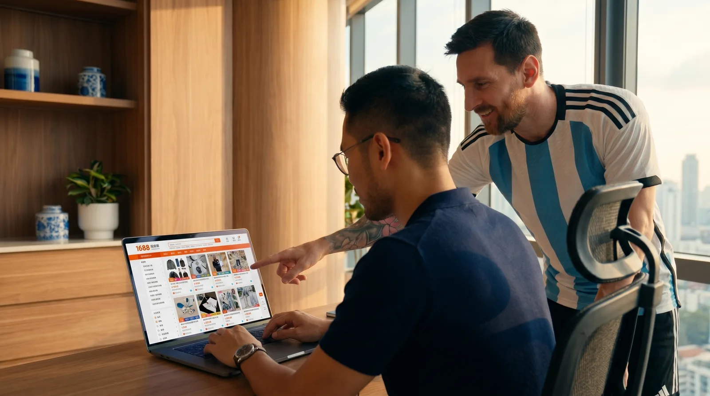
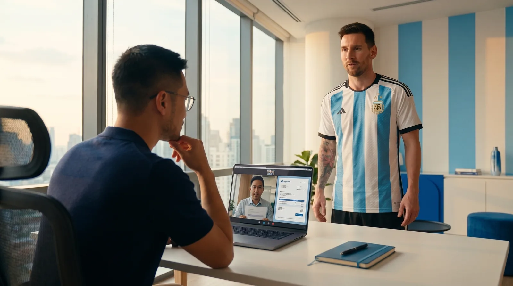
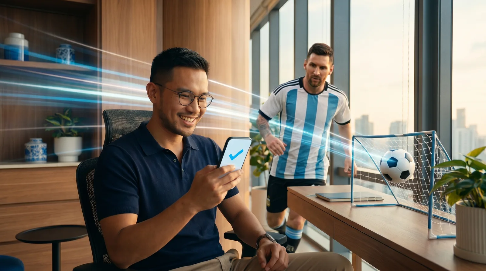
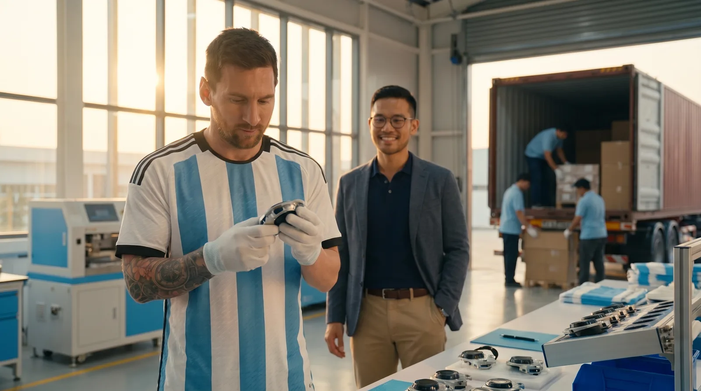
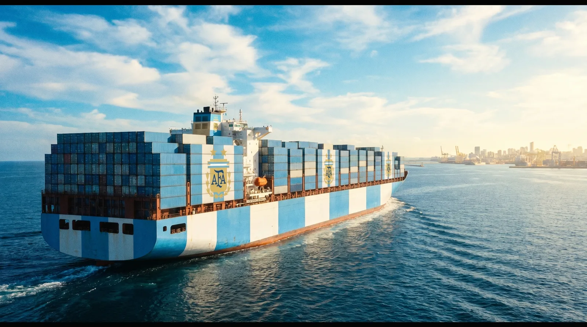
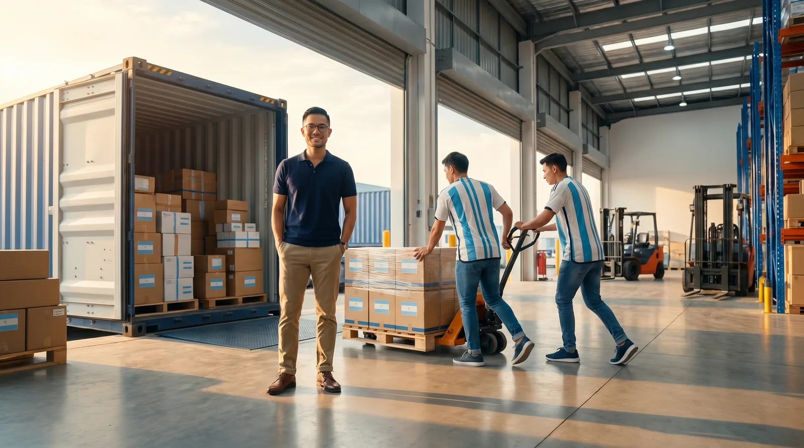
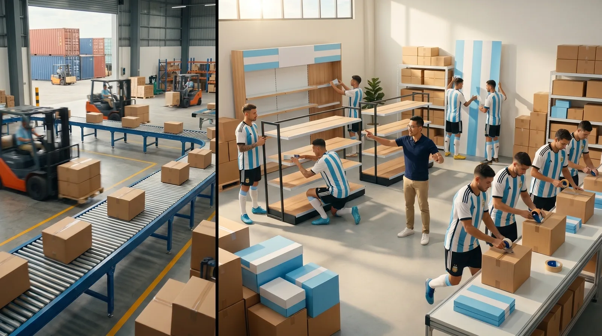
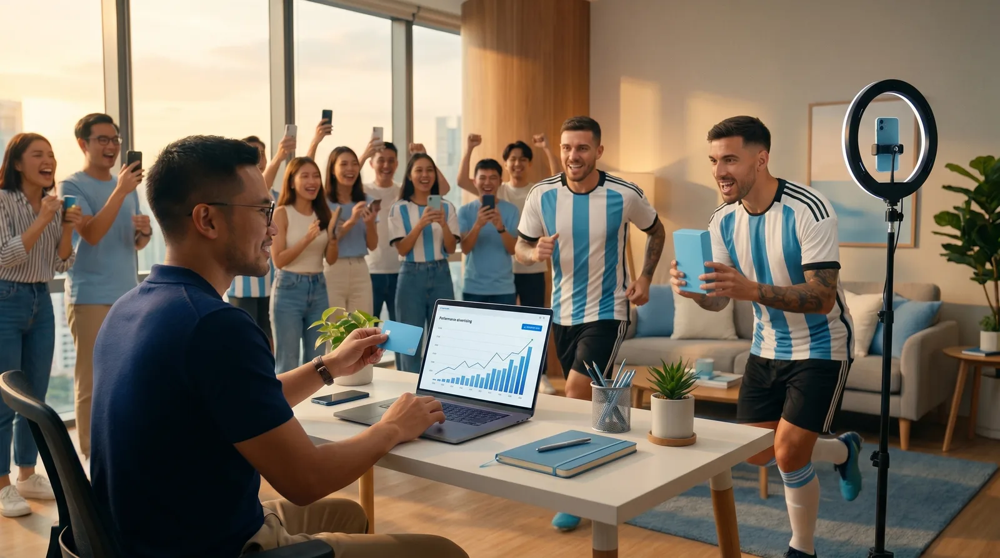
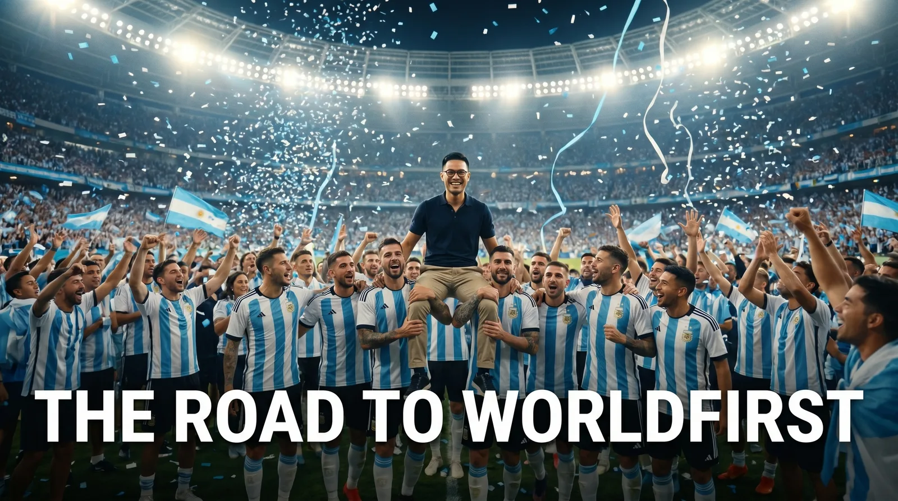

A cross-border seller's journey told as a football journey, with the Argentina squad as the teammates who carry him from a first idea to the top of the world. The brand is the destination both roads arrive at: The Road to WorldFirst.
WorldFirst × Ant International · tournament-season hero film · revised per Steven's notes · 20 Jun 2026









Hero — 60s: the full 12-beat journey.
Paid cutdown — 15s: beats 1 (1688 + player), 3 (instant pay), 9 (kick to globe), 12 (stadium finale).
Match-day sting — 6s: beat 9 (the kick to the globe) or beat 12 (the lift), straight to the line.
These are AI reference frames (a look and a flow, not final shots). On your sign-off I lock the shot list, motion/transition notes between beats, and final VO, then we build the 15s and 6s. Player likenesses and AFA livery go through AFA approval before anything is finalised.